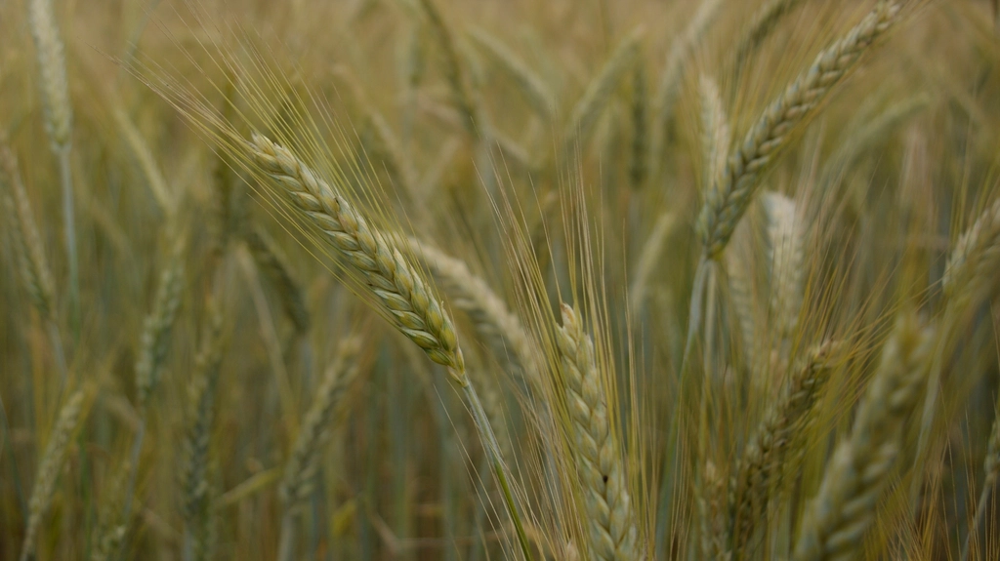

パン作りへのこだわり
一つひとつの工程を大切に、焼きたてをお届けすることを心がけています。
「プティ グーテ」という名前
「プティ グーテ(Petit Goûter)」は、フランス語で「小さな、4時のおやつ」を意味する言葉です。フランスでは、学校帰りの子どもたちが午後4時ごろに食べる軽い間食のことを「グーテ」と呼ぶ習慣があるのだそうです。当サイトでは、この言葉の響きにちなみ、学校や仕事帰りにふらっと立ち寄っていただけるような、小さなおやつ時間のイメージを大切にしています。
ABOUT KANONJI
瀬戸内海に面した、観音寺の町
プティ グーテがあるのは、香川県西部、瀬戸内海を望む港町・観音寺市観音寺町。穏やかな海辺の空気が流れるこの町の一角で、日々パンを焼いています。お散歩やお出かけの途中に、ちょっと立ち寄っていただけるような存在であれたらと思っています。
OUR CARE
焼きたてを、大切に


一つひとつのパンを、できるだけ焼きたての状態でお届けできるよう心がけています。使用している粉や発酵方法、焼き方などの詳しいこだわりについては、現在情報を整理中です。決まりましたら、随時このページでご紹介してまいります。